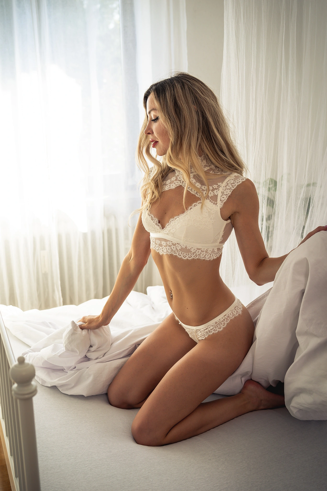
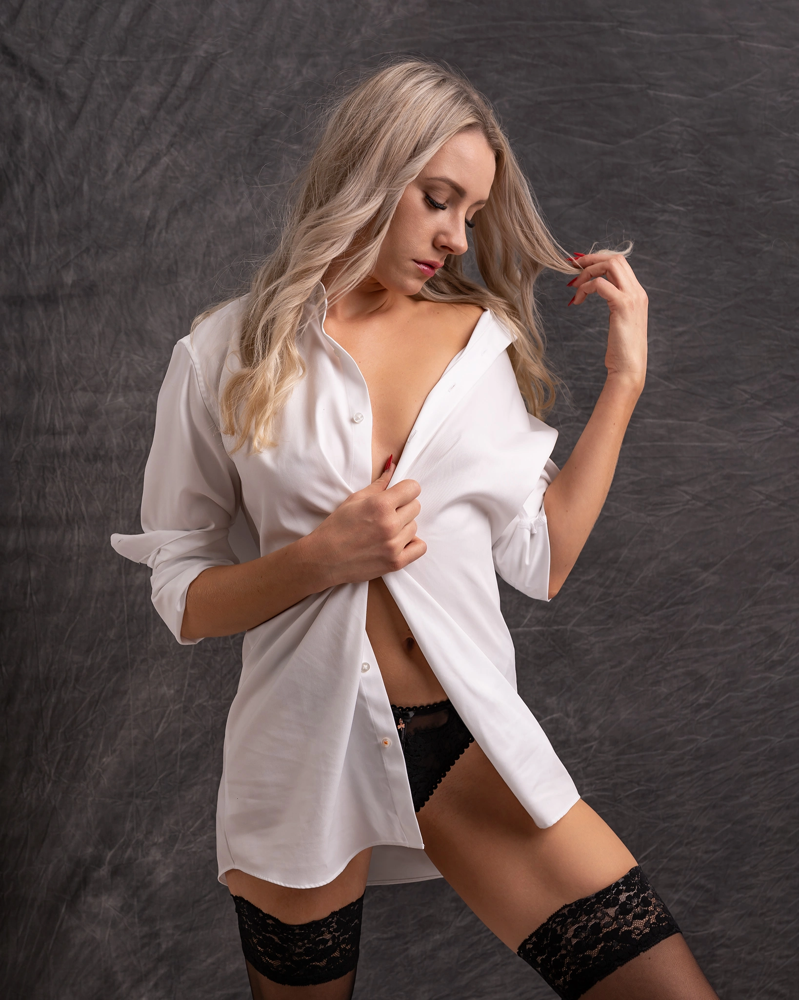
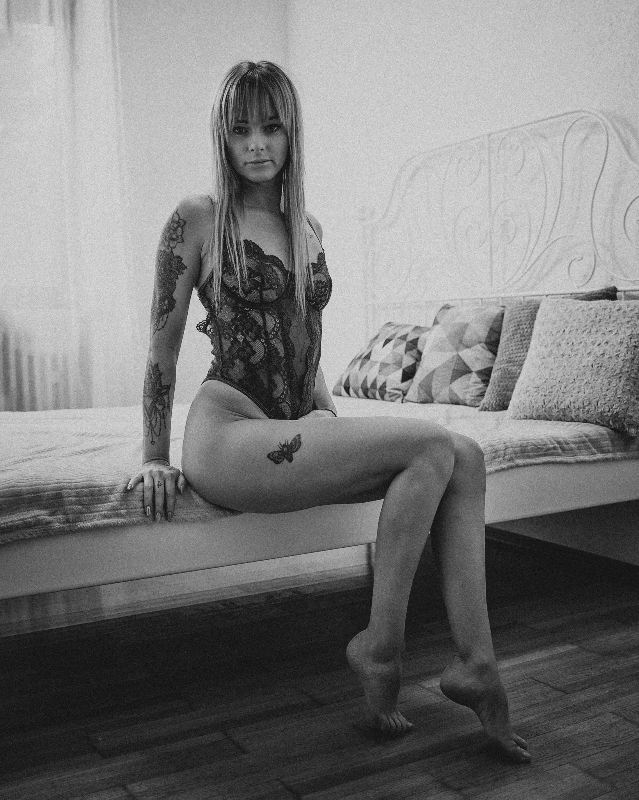
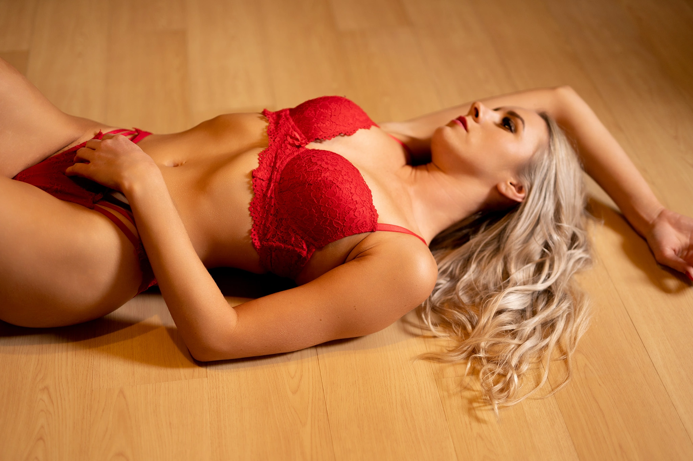
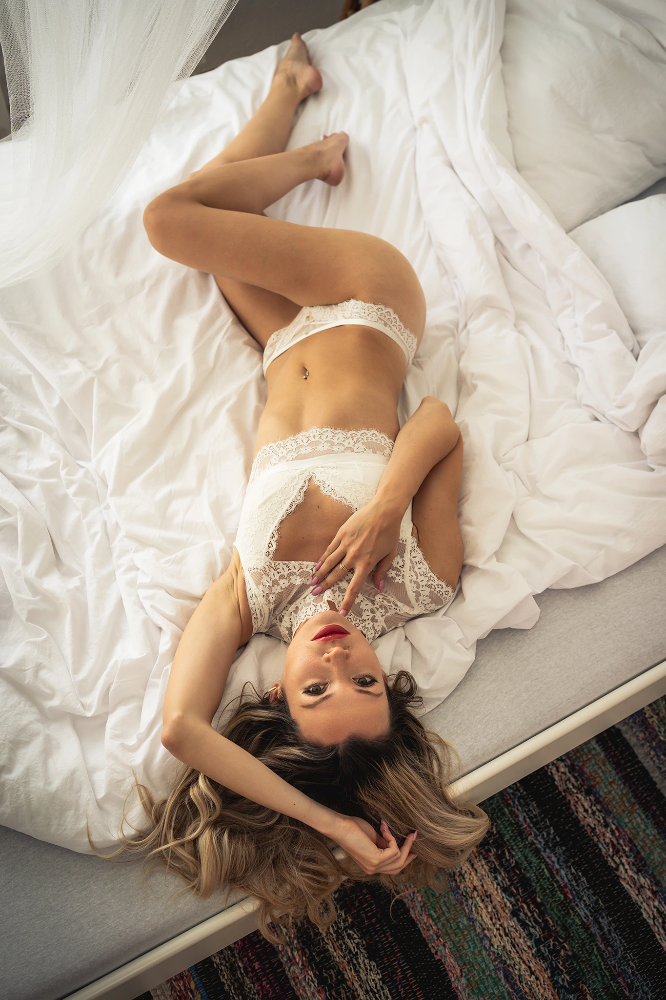
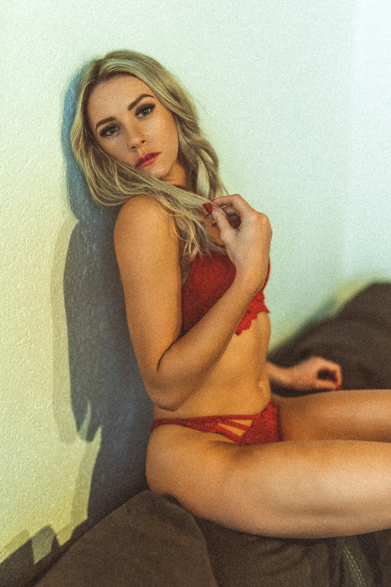
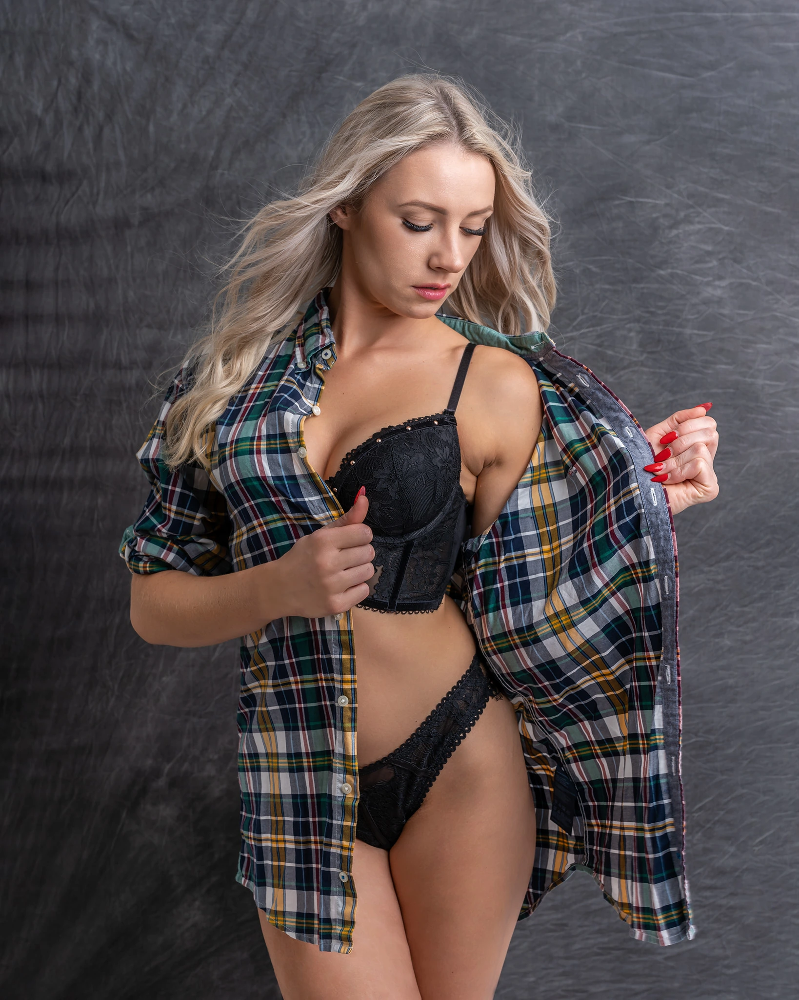

Elegante Sensualfotografie – natürlich und zeitlos
Ein sinnliches Shooting für Frauen ist eine großartige Gelegenheit, eine andere Seite von Dir zu zeigen – die mutige, stolze, starke, feminine Seite... etwas, das Du in Dir trägst, aber im Alltag nicht unbedingt zum Ausdruck bringst. Es ist eine Zeit für Dich, Dich besonders zu fühlen und dies in Fotos festzuhalten. Der Stil hängt von Dir ab – er kann unschuldig sinnlich oder mutig und wild sein.
"Beauty begins the moment you decide to be yourself."
boudoir fotograf rottenburg an der laaber / sensual shooting landshut / boudoir shooting regensburg / dessous shooting ingolstadt / sinnliche fotografie kelheim / boudoir fotos abensberg / boudoir fotograf mainburg / sensual fotografie niederbayern
/ münchen fotograf / fotograf münchen / natürliche fotografie münchen / moderne fotografie münchen / stilvolle fotografie münchen / professionelle portraits münchen / fashion shooting münchen / personal branding münchen / business portrait münchen